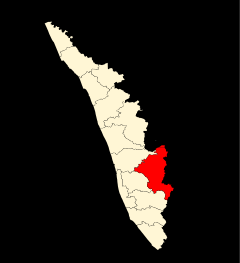

 Idukki, a landlocked district of Kerala, is one of the most nature-rich areas in Kerala with more than half of the area covered with forest. This rugged hill resort is known for its wildlife sanctuaries, beautiful bungalows, tea factories, rubber plantations and forests. Idukki's speciality lies in 650 feet long and 550 feet high arch dam across the Kuravan Kurathi mountain, which is the largest in the country. Anamudi, which is the highest peak in India, south of the Himalayas, is also located in Idukki. Idukki is one of the districts in the state that has abundant scope for promotion of eco-tourism if proper infrastructure and promotional activities are provided.